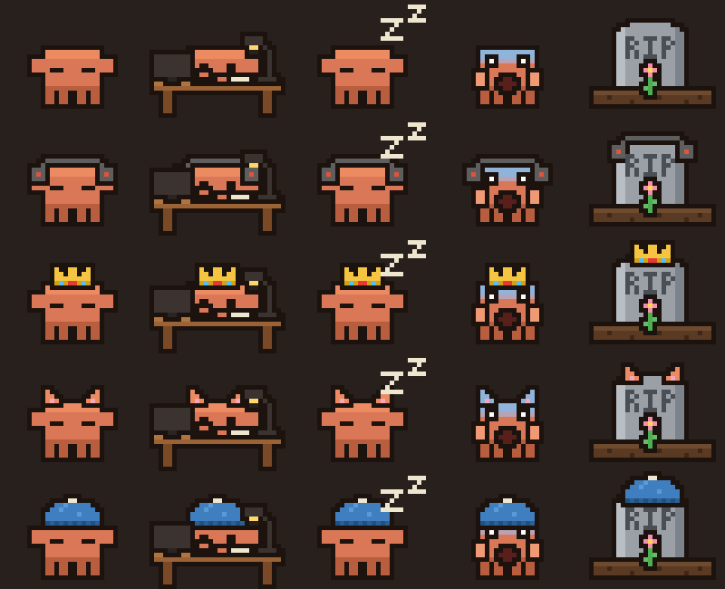
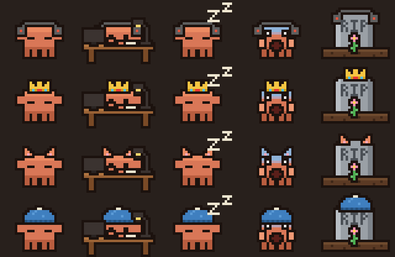

Active session
Claude Code was active within the last 90 seconds.
A lightweight pixel-art desktop companion for Windows that reflects your Claude Code activity at a glance. It shows when Claude is working, when your session is idle, and when you approach your usage limits. A single small executable, about 13 MB of memory.
npx claude-pixel-pet
Windows only. Requires Node.js. Running the command again while the pet is open does not start a second instance.

01 / Moods
The pet monitors Claude Code activity and your usage, and updates its appearance so the current status is clear at a glance.
Claude Code was active within the last 90 seconds.
Claude is open but quiet, or Claude is closed.
All Claude windows are minimized, or there has been no activity for 10 minutes.
Usage has reached 80% of the 5-hour limit.
Usage has reached 100% of the weekly limit.
02 / Skins
Select a skin and it applies across every mood.
Right-click the pet → Skin to select one. Your choice is retained between sessions and saved in ~/.claude/pet_settings.json.

03 / How it works
The Scream and RIP moods depend on your usage data, which the pet obtains in one of two ways. Right-click the pet to view your usage and the active source.
If you use a Claude Code status line, add one line to your status line script immediately after it reads its input. The line saves the 5-hour and weekly percentages that Claude provides to the status line into ~/.claude/pet_limits.json, which the pet reads. Values refresh each time the status line runs (Claude Code in a terminal), and the right-click menu shows source: Claude.
if ($data.rate_limits) { try { $data.rate_limits | ConvertTo-Json -Depth 5 | Set-Content -Encoding utf8 "$HOME/.claude/pet_limits.json" } catch {} }echo "$input" | jq -c '.rate_limits // empty' > ~/.claude/pet_limits.json.tmp && [ -s ~/.claude/pet_limits.json.tmp ] && mv ~/.claude/pet_limits.json.tmp ~/.claude/pet_limits.jsonWithout that file, the pet totals the tokens in your Claude Code logs over a rolling 5 hours and 7 days and compares them with FIVE_H_LIMIT and WEEK_LIMIT at the top of src/main.rs. Adjust these values to match your plan, then rebuild with cargo build --release.
The working, idle and sleeping states are derived from recent Claude Code activity and whether Claude windows are open or minimized. The Claude desktop app and the native claude.exe CLI are detected.
04 / Privacy
No account, no telemetry, no network calls.
Claude Code's logs in ~/.claude/projects and ~/.claude/pet_limits.json.
Only ~/.claude/pet_settings.json, which stores your skin selection.
No data is sent over the network. The source code is open for inspection.
05 / Details
To obtain the newest version, run npx claude-pixel-pet@latest; npx retains the copy it previously downloaded.
Install Rust (MSVC with the Windows SDK, or the GNU toolchain). The built pixel_pet.exe is self-contained and can be copied to any location.
git clone https://github.com/giannisBFMV/claude-pixel-pet.git
cd claude-pixel-pet
cargo build --release
target\release\pixel_pet.exenode.exe) is not detected as an open window.pixel_pet.exe, or a .cmd file containing npx claude-pixel-pet, in your Startup folder (Win+R → shell:startup).Get started
Free and open source under the MIT license.
npx claude-pixel-pet